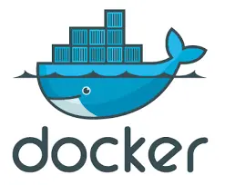

Projet
Présentation du projet
Ce projet était dans le cadre d'une Situation d'apprentisage et d'évaluation (SAE) dont son but était de nous faire acquérir la capacité
d'installer, configurer, mettre à disposition et optimiser le système informatique d'une organisation
Plus précisément, ce projet avoir pour finalité la création d'une chaîne de traitement automatique d'un certain nombre de tâches pour supporter
l'équipe de développement web d'une entreprise.
La principale particularité de ce projet était que nous devions utiliser l'outil Docker pour effectuer les différentes tâches.

Déroulé du projet
Pour l'étape n°1, on devait faire l'analyse des jeux de fichiers pour comprendre ce que les développeurs de l'équipe web
pouvaient manipuler au quotidien. Il y avait plusieurs types de fichiers comme des fichiers images, csv et texte. On devait seulement conserver les
fichiers qui respectaient les normes imposés par l'équipe web.
Pour l'étape n°2, nous devions mettre en place cette chaine de traitement. On devais notamment :
- Convertir et/ou redimensionner les fichiers images
- Formater des fichiers textes pour qu'il puisse être utilisable en HTML
- Créer des tableaux à partir de fichiers csv
Ce projet était un projet de groupe : j'étais chargé du traitement des images que j'ai fait en BASH
Voici mon code
Script Traitement image
Pour le reste des tâches, on les a réalisés en PHP.
Bilan du projet
En termes de compétences techniques, ce projet m'a fait découvrir de nouveaux languages de programmation : j'ai obtenu des bases en Bash.
Il m'a fait aussi découvrir l'outil Docker et le concept de la conteneurisation. Il m'a fait découvrir les différentes étapes à réaliser pour réussir à mettre un place
un outil pour un poste de travail.
Cependant, je considère ce projet comme non abouti car notre groupe n'a pas réussi à correctement automatiser certaines tâches comme le traitement des fichiers cvs.
De plus, j'ai remarqué que j'avais des lagunes pour le PHP que je dois corriger. Je considère ne pas avoir validé cette compétence.